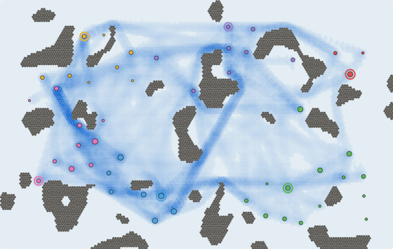
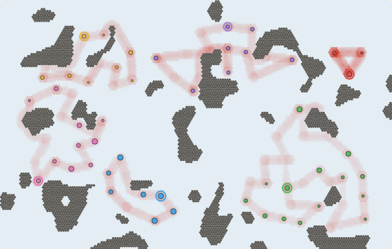
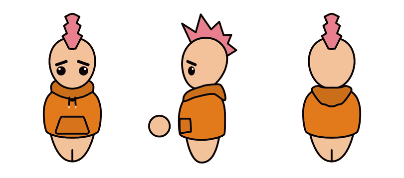
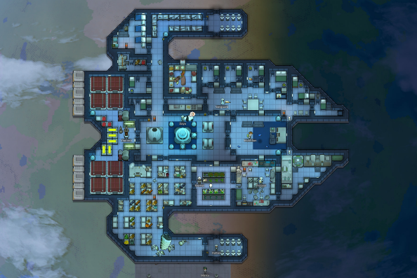
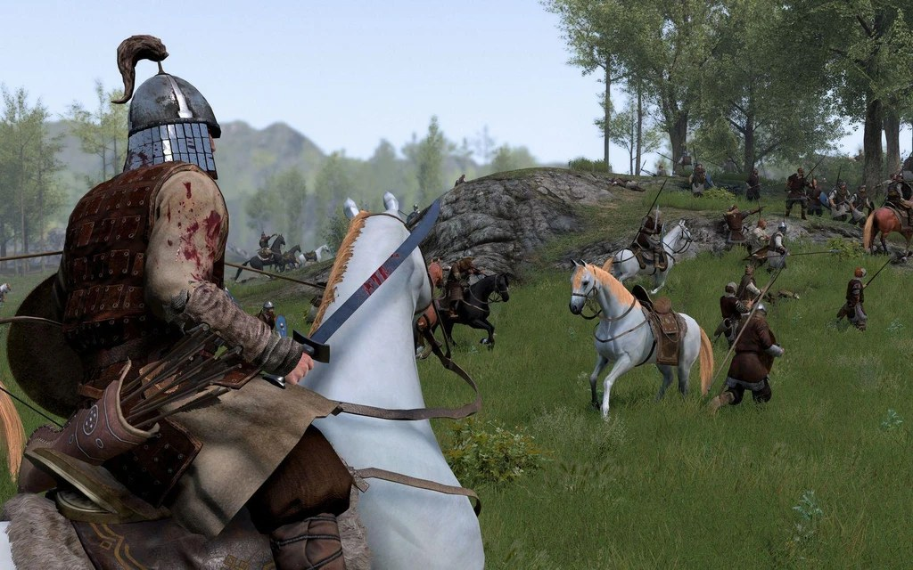
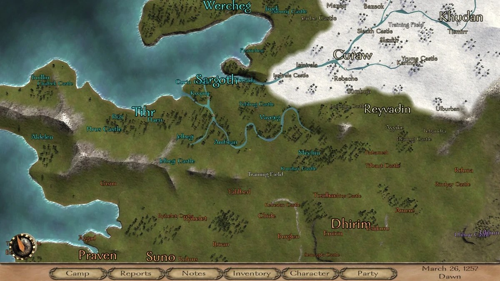
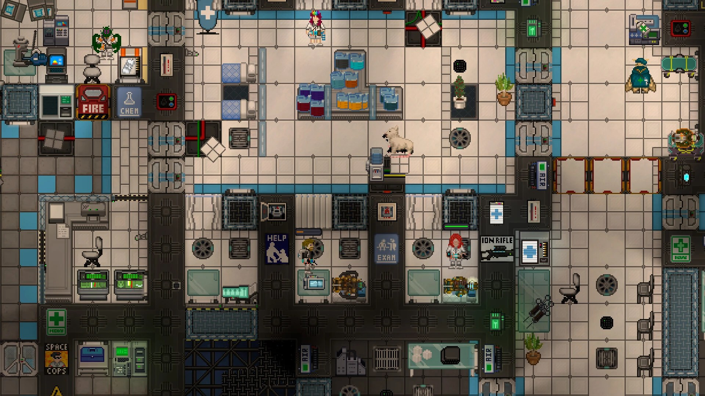
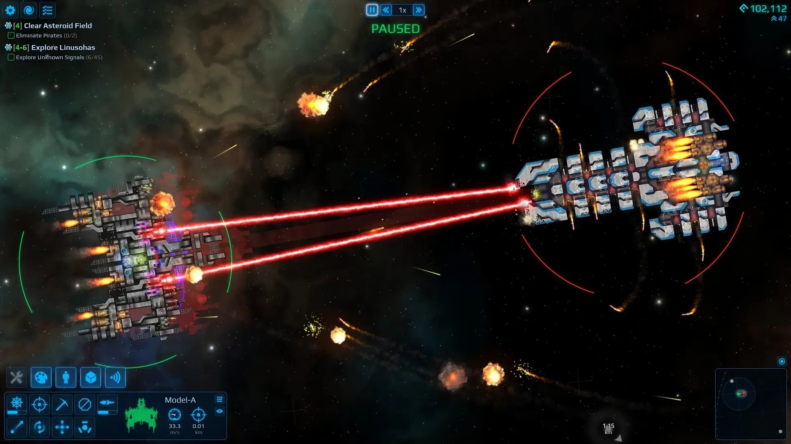
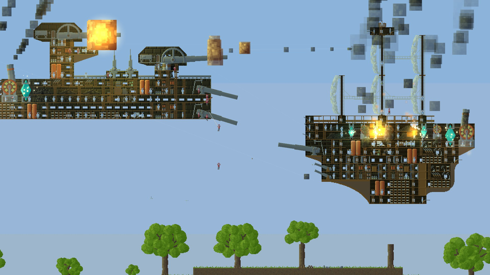
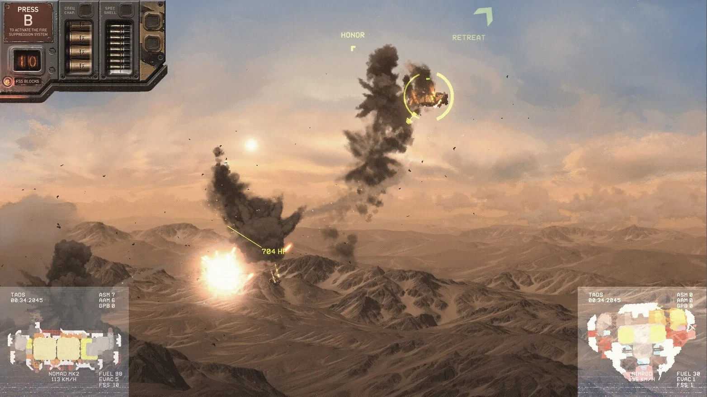

这篇文章阅读大约需要10分钟。
本文介绍我正在制作的独立游戏《海盗与资本主义》的玩法和设计初衷。我会先介绍它是一款什么样的游戏，并放出目前的实机演示；然后说明我做出这些设计的理由；接着列出我参考过的游戏，以及我对它们的看法；最后写出我认为这个项目目前的不足。这个游戏还有很多不成熟的地方，但写文章记录下来依然有意义，因为这可以帮助我学习与反思。
如果你对我的游戏设计理念感兴趣，欢迎阅读文章：《我的游戏玩法设计理念》，我在那里讲述了我做游戏设计的基本逻辑。
这是一款什么样的游戏
《海盗与资本主义》是一个纯俯视角的单机舰船战斗游戏，玩家可以在沙盒格子中自由建造自己的舰船，招募小人（即船员），进行舰船战斗与掠夺。游戏没有明确的目标，玩家可以自由决定与特定势力交好或者交恶，可以成为私掠武装自由劫掠商船，也可以进行商业贸易、走私等。
游戏大致可以分为三个场景：建造、战斗、战略。我已经开发了大概一个月，舰船的建造和战斗部分相对完整；战略部分做了世界经济系统和大地图的原型，但还没有做交互部分。
关于建造，玩家可以自由建造自己的舰船，包括小人休息和用餐的房间、船体结构、墙体和装甲、武器和弹药库、引擎等等。整个建造发生在一个格子网格上，船体的范围由所铺设的单层格子决定，所有的物品都放在船体上，占据一个或者多个格子。船体是承载所有建筑物的基础，会因为炮击或者撞击损坏。每艘船都有一个“舵”作为船体控制中心，如果舰船发生结构性断裂，没有舵的那一侧船体残骸将失去控制。舰船的移动由引擎实时提供，如果引擎被损坏，移动也会受到影响，例如单侧引擎损坏可能导致舰船失去转向能力。
船上的武器需要小人操作，因此小人也是建造的重要一环。玩家可以在城市招募小人，给他们自由配备装备，编排成战斗队，任命队长等。以下是建造过程的演示：
关于战斗，玩家如果在大地图上遇到其他舰船，可以选择与之交战。战斗中，玩家用键盘WASD和QE控制舰船的四向平移与旋转，用鼠标右键标记敌舰的目标打击点，还可以用鼠标调整己方战斗队的战斗策略，例如是倾泻弹药还是保守防御、是死战不退还是优先避让等。造成伤害的方式主要依靠己方舰船的武器，情急之下也可以用跳帮战术，或者直接操纵己方舰船撞击敌舰。游戏做了真实的碰撞模拟，船体的薄弱处更容易被撞碎，这也是一种平衡手段，防止玩家只用一条单薄的船体来搭建舰船。
关于战略，游戏提供了一个动态的、实时的世界经济模拟系统，整个世界都有真实的物品生产和消耗逻辑，由此产生贸易需求，商队和海盗也因此出现。玩家可以在大地图上航行，自行探索各个城市，发掘各城市的建筑、产出、消耗、军队巡逻特点等。玩家可以劫掠商船、打击同行、收购贩卖货物、走私违禁品等。
需要说明的是，以上介绍的内容并不全部已经实现：战斗中的跳帮、逃跑、缴纳赎金还没有做，投降也只有最简单的版本，战略部分的大地图也没有完全实现。
我的设计初衷
整个游戏遵循同一套规则，适用于玩家和所有NPC舰船，玩家没有特权。这里描述的是设计观念，其中有些尚未实现。
建造
建造是玩家的行为，战斗则是验证这些行为的过程。设计师为玩家做游戏，好比家长照顾孩子：孩子说了什么、做了什么，家长一定要给予反馈，这样才能形成奖惩循环。因此我追求战斗时舰船的所有特点都来自建造时的船体构造。例如引擎提供推力和力矩，决定了战斗时舰船的最大航速、线性加速度和角加速度，引擎被损毁，移动性能也会相应受到影响。武器同理：靠外放置的武器可能有更好的射界，但也更容易被敌方打中。轻型船体能减轻舰船重量、带来移动优势，但更惧怕撞击和重炮。
为了让建造有新鲜感，我追求让所有武器都有完全不同的机制，例如：需要大量人力装弹的固定式铸铁炮，可以打击船体的加农炮，擅长反人员的机枪和破片榴弹，擅长封锁区域的毒气榴弹，造成火焰蔓延但可能影响战利品的燃烧榴弹等等。
建造也服务于船体美观，这对宣传片的观感和新玩家的吸引很重要。我计划加入斜角装甲，它没有太多实用价值，主要作用是平滑舰船的外轮廓，让舰船看起来更美观，而不是像劣质积木。
为了避免玩家重复劳动，我允许玩家将舰船的部分结构保存为蓝图，也可以直接保存整艘舰船。舰船被击毁之后，玩家下次可以直接复刻旧舰船的设计。
战斗
战斗中玩家的操作不能太繁琐，不能走RTS的老路，但又要让玩家有亲自指挥舰船的感觉。因此我让玩家控制战斗的大方向，由小人自动接管舰船细致的作战行为。玩家不操控具体的武器，只标记几个目标打击点，小人会自动尝试打击这些目标。此外玩家可以给炮分组，用数字键激活炮组的齐射，这在简化操作的前提下增加了操纵感。
战斗应该有爽快的反馈，玩家打中了什么、摧毁了什么、击杀了什么，都应该能立刻感知到。举例来说，《cf》的击杀音效和图标令玩家印象深刻，《瓦罗兰特》的击杀音效、《战地》的命中反馈也都是很好的先例。因此我用命中的爆炸和烟尘反映玩家打中了什么地方，并在右上角做了击杀记录；我还打算加入敌方哀嚎音频和说话气泡，进一步强化命中反馈。
战斗应该是新颖的，因此我在设计不同类型的敌舰，也鼓励玩家尝试自己的设计。其中包括：以装甲防御为主但惧怕火焰的巨大舰船；在护卫舰保护下航行、没有战斗能力的商船；移动能力优秀的骚扰型敌舰；左右不对称的舰船；擅长撞击的舰船；以及有结构弱点的舰船（裸露的引擎、连接薄弱的船体、靠外侧的弹药库等）。
战斗失败不应该带来太大的挫败感，否则玩家会没有勇气尝试。我会减弱敌方的追击欲望，并加入逃跑、投降、缴纳赎金等脱身与交涉的环节，避免单次战斗的损失风险过大。
战略
战略大地图信息量大，玩家的行动自由度也高。关键在于，这些信息里有没有规律能被玩家识别，从而让玩家利用规律获利。为了构造这种规律，我要求城市之间有稳定的贸易需求：例如有的城市富含铁矿，有的城市大量生产武器，就需要有人把铁从前者运往后者。同时整个大地图被空岛分割，从而形成稳定的航道。玩家发现航道的规律，就能找到适合劫掠的地点，以及适合销赃和逃跑的路线。军队也应该有类似的稳定规律。这种规律不应该太复杂，因为玩家的耐心和思考是有限的，规律太难学习，不但不会延长玩家愿意游玩的时间，反而会影响乐趣，造成玩家流失。


美术与背景
除了玩法，我也在美术层面做了设计。游戏的美术不光服务于画面表现，也在向玩家传递特定信息。例如小人的外观，我是用一套矢量图图层堆叠的方式制作的，小人的每一个部分都承担着传递信息的任务。头部主要用于让玩家区分和识别他们，因此他们有不同的发型、发色、眼睛、眉毛和肤色，帮助玩家在远处区分谁是谁。衣服是一种身份标识，颜色和样式可以区分他们属于什么部队、担任什么职务，玩家还能直观看到他们的装备，比如防弹衣、腰带等配件。小人受伤之后身上会出现伤口贴花，包扎之后会出现创可贴贴花。手部动作则提示他们在做什么，例如医疗、换弹、搬运、维修等。

背景设定同样服务于美术或者玩法。例如我设定这个游戏世界出于某种原因无法使用海洋船只或者陆地运输，必须选用空中舰船。这种设定实际上是因为海洋航行的背景景色很无聊，而空中航行的远景很好看。另外我设定城市分为上城和下城：下城在地球地表，上城在舰船航行的高空，二者通过天梯相连。这种设定实际上是因为我不想在战斗地图里做规模太大的城市，只想做一个简单的港口复合体，让城市里大部分人口的生产和消费只做粗糙的数值模拟。
我参考了哪些游戏
作为背景信息补充，也出于对前人设计的尊重，我在此列出我参考的游戏。这些游戏未必与《海盗与资本主义》同类型，但我从它们那里继承了一些东西，也许是一个机制、画面表现、乐趣所在或者情感表达。我也列出了一些没有玩过、但未来可能会参考的游戏。
《环世界》奥德赛DLC
《环世界》是一款设计精巧的基地模拟游戏，设计师泰南借鉴了《矮人要塞》的玩法以及《监狱建筑师》的矢量图美术设计。在《环世界》中，玩家可以在一片沙盒格子地图上自由建造固定基地，招聘小人，做自己想做的事情。基地内的机器和装置都需要小人操作才能运转，玩家可以给小人安排任务，但小人也有自己截然不同的特质和偏好。整个游戏没有强制目标，故事性和代入感比较强。奥德赛DLC是第五个官方DLC，允许玩家打造一个飞船基地，操纵它飞行到另一张沙盒地图，并新增了一系列相应的任务。
我玩过《环世界》本体500多小时，但没有玩过奥德赛DLC。我喜欢《环世界》的沙盒格子地图，它允许玩家极其自由地摆放建筑，同时无需大量编程，就能让场景中的各个系统相互耦合，产生戏剧性的事件。我也喜欢《环世界》的小人设计：它给每个小人赋予了不同的特点、性格、背景故事、朋友和讨厌的人等，因此玩家很容易与游戏里的小人建立情感连接。作者通过这种情感连接就可以牵动玩家的情绪：玩家会为小人过上好生活而开心，也会因为小人的不幸遭遇乃至死亡而沮丧。一个矛盾点在于，当这种连接过于强烈时，很多玩家会为了不让自己喜爱的小人死去而读档或者作弊，这就摧毁了整个游戏的反馈过程。
奥德赛DLC的内核与我的游戏《海盗与资本主义》很不相同，因为前者仍然建立在固定的格子地图基础上，飞船只是一座可移动的基地建筑物，不能旋转，只能以固定朝向摆放到另一张地图上。

《骑马与砍杀》：战团
《骑马与砍杀》是土耳其TaleWorlds开发的一款中世纪题材的动作角色扮演类独立游戏，《战团》则是原作的独立资料片。游戏精妙地融合了第三人称战术动作与沙盘策略玩法，没有给玩家明确的游戏目标。玩家在游戏之初来到“卡拉迪亚”大陆，可以招募并培养军队，指挥野战与城堡攻防战，也可以自由经商、作为自由人战斗、作为雇佣兵领兵作战、成为某个势力的领主，甚至自立为王以统一大陆。
我喜欢《骑马与砍杀》的一点在于，它让战斗发生在小规模地图上，而战略发生在大地图上。玩家在大地图上追上敌人，就会以第三人称进入小规模的战斗地图，带领士兵与敌人进行战术战斗。这种设计在《全面战争》系列中也能看到。我想一个原因在于：战斗紧张刺激，容易让人疲惫，而战略张弛有度，主要消耗的是脑力，把战斗地图和大地图结合起来，可以让玩家不至于过度疲劳。同时，大地图上能看到敌军规模、附近援军、作战的地形和天气，这些信息有利于战斗地图上的战斗；反过来，战斗的结果，包括双方伤亡和俘虏情况，又会影响大地图上的战略。这种双轨设计相互结合，同时赋予战斗和战略以意义，让游戏成为一个整体。


我还喜欢的一点是，游戏以弱引导、无目标的形式展开：玩家需要自行判断亲近哪一个势力、拉拢哪一个领主，自行发现什么商路方便盈利。我对《骑马与砍杀2》很失望，除了画质增强，它几乎没有玩法创新，失去了mod的加持之后，玩法上甚至有所退步。
其他可能构成参考的游戏
《Space Station 14》，一个高自由度、纯俯视角的角色扮演游戏。

《星舰设计师》，纯俯视角游戏，玩家设计战舰进行对战。

《Airships: Conquer the Skies》，纯侧视角游戏，玩家设计战舰进行对战。

《HighFleet》，纯侧视角游戏，画风极其出色，玩家控制自己组装的战舰对战。

此外还有众多可能构成玩法参考的游戏，例如《围攻》《FTL》《远行星号》等；可能构成视角参考的纯俯视角游戏，例如《静脉注射》；以及可能构成物品设计参考的游戏，例如《创世战车》等。这里不一一列举了。
现存的问题
最大的问题在于，这个游戏的规模和开发成本比我想象的大得多。尽管作为2D游戏，它比3D游戏更容易开发，但开发中很大一部分工作量来自它有一个大世界：这个世界上将有众多城市与船队，它们有自己的行为，并提供不同的交互。同时还有众多物品组件的数值需要平衡调整。如果这个世界是一个关卡制的2D游戏，开发会容易很多。从这个角度看，我可以借鉴《Airships: Conquer the Skies》，它也有自己的战略大地图，交互似乎是按钮和文本的形式。长期来看，我不确定要不要继续推进《海盗与资本主义》这个项目。也许小品级别的线性游戏或者卡牌游戏更适合单人开发者。
另外，游戏现有的几个玩法之间存在冲突。游戏借鉴了《环世界》的基地模拟玩法，想通过玩家与小人的朝夕相处让玩家建立情感连接；同时又结合了《骑马与砍杀》的大地图设计，舰船在大地图上航行时时间是加速的，这导致玩家更关注整艘舰船的航行情况，而忽视小人的具体行为和遭遇。我想到的一个解决方案是：切换到大地图时暂停时间，玩家只在大地图上查看环境、制定航道，而全程在战斗地图上航行，这样就会强制玩家花更多时间观察小人、建造舰船。但这样又存在游戏节奏的把控问题：如果不加入倍速，就很难控制航行和战斗的占比，保证二者都很有趣。
还有一个问题是小人的智力。这在很多基地模拟游戏中都能看到：玩家通常不直接控制小人，而是用时刻表和工作分工管理他们，由小人保证基地运转（如《环世界》《缺氧》）。这会导致玩家抱怨小人不够聪明、犯低级错误，游戏对玩家的惩罚也因此容易变成玩家对小人行为的抱怨，进而变成对游戏本身的抱怨。
最后的问题是音效和美术，它们本身就占用了我大量的时间。现有的AI生成的音效和美术无法达到开箱即用的程度，购买第三方资源又存在风格不统一的问题。音效和美术问题的根源还是游戏规模，如果是静态卡面的卡牌游戏，会节省很多时间。